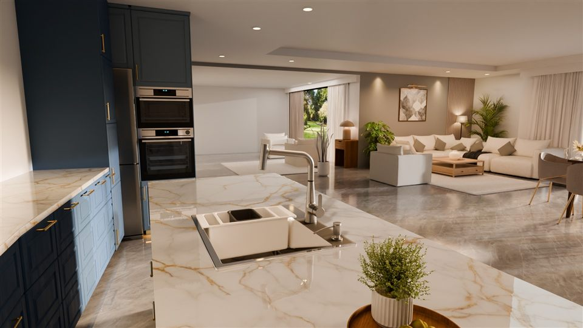
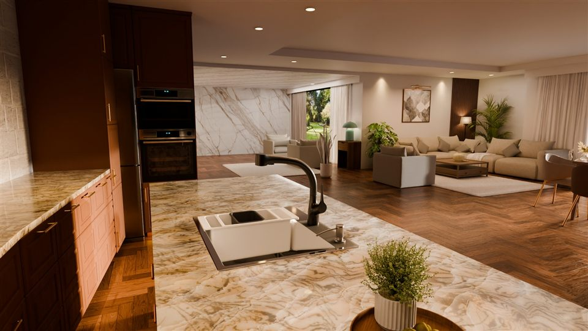
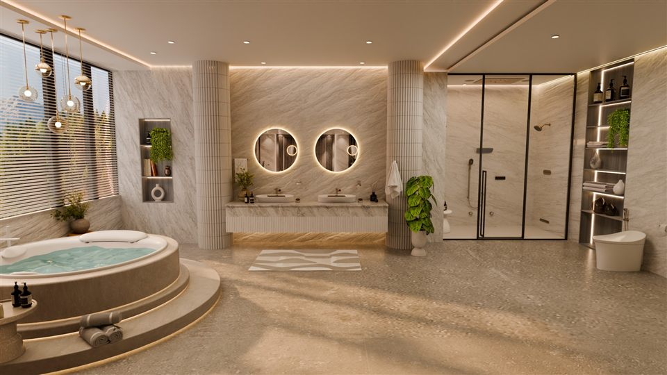
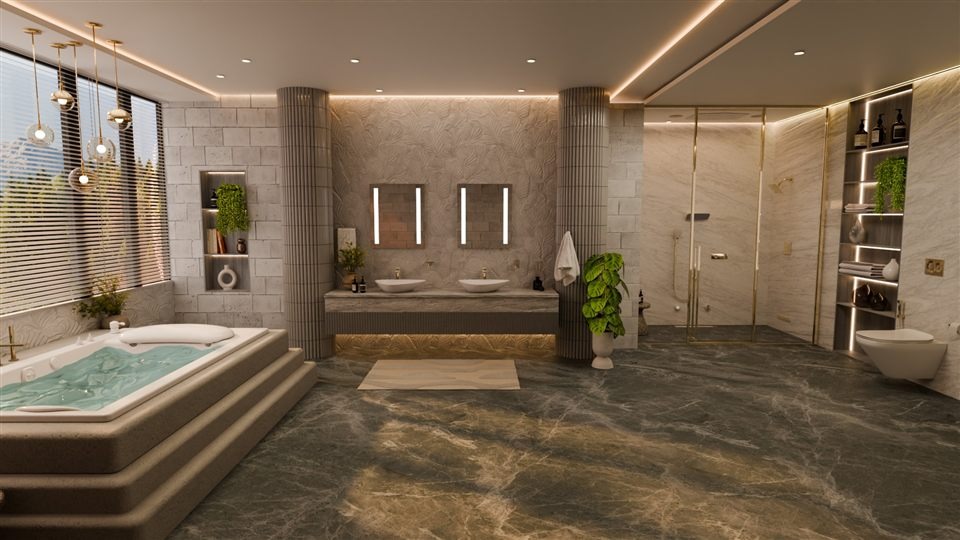

Interior walkthroughs
Pick a room. Walk around it in 3D, then tap any surface to ripple the second finish across the room.


Kitchen
Navy & white marble · Walnut & herringbone


Bathroom
Travertine & bronze · Stone & gold
How to use: drag to look around · scroll or pinch to zoom · tap a surface to switch the finish from that spot · the view buttons jump to close-ups (real renders) · Tour plays the walkthrough on its own. Best on a laptop or desktop; phones get a lighter version.